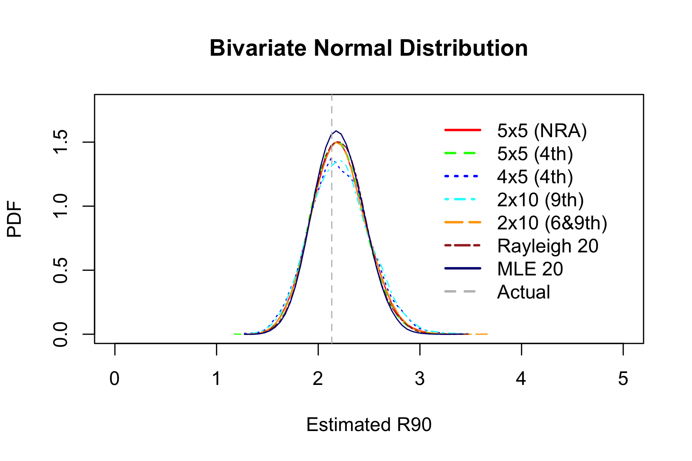
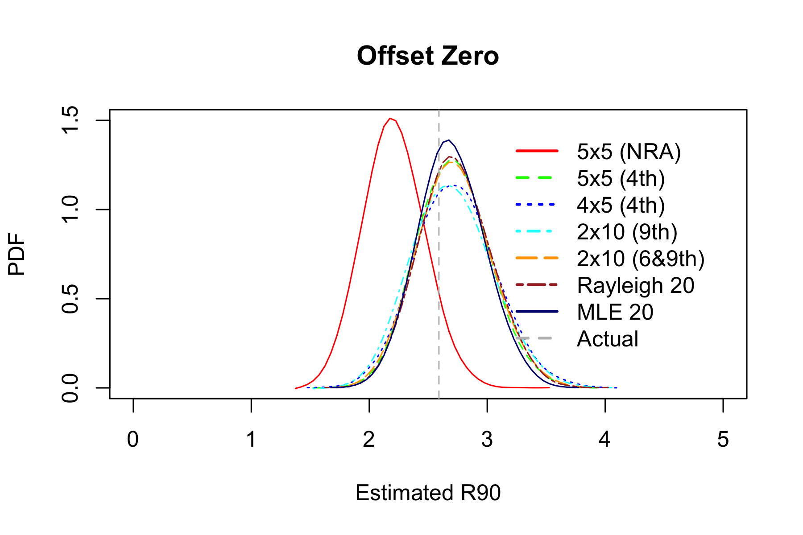
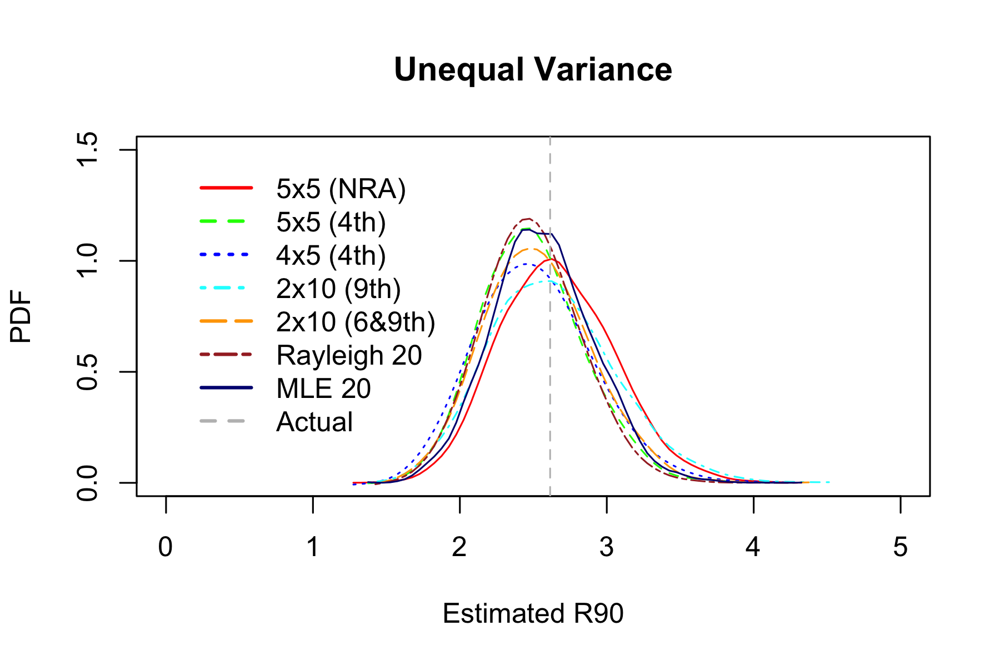
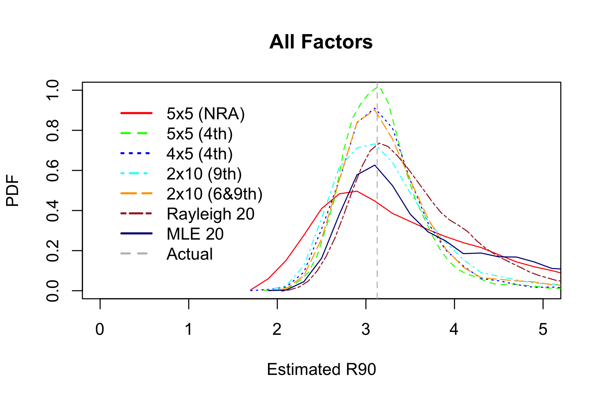

R90
Abstract
Several R90 estimators are compared using Monte Carlo simulations. Estimators based on R9:10 (second worst miss radius in a 10-shot group) and R6:10+R9:10 found to perform well on wide variety of input distributions.
Objective
Based on observed shots, estimate R90 (the radius of a circle that is expected to contain 90% of all impacts).
Estimators
5x5: Measure average extreme spread of five 5-shot groups. This common method is used by NRA magazine American Rifleman to report firearm accuracy. Multiply by 0.72 to get estimate of R90. This assumes perfect zero.
2x10 (9): Measure 9th-smallest miss radius R9:10 in each of the two 10 shot groups, take the average, multiply by 1.15 to get estimate of R90.
2x10 (6&9): In a 10 shot group, add 6th-smallest miss radius R6:10 and 9th-smallest miss radius R9:10. Do it again with the second group and take the average. Multiply by 0.69 to get estimate of R90.
Rayleigh 20: Take the average of 20 miss radiuses, multiply by 1.76 to get estimate of R90.
MLE 20: Take the sum of squares of 20 miss radiuses, multiply by factor shown in Appendix to get estimate of R90.
Experiment 0: Bivariate Normal Distribution
Start with establishing the baseline. Pull impact coordinates from standard bivariate normal distibution, estimate R90, pull another impact, see if it lands inside R90. Compare root mean square error (RMSE) and mean absolute error (MAE) of different estimators.
Example groups:
Distribution of R90 estimates based on \(10^{5}\) simulations:

| Estimator | Hits within estimated R90 | RMSE | MAE |
|---|---|---|---|
| 5x5 | 90.226% | 0.274 | 0.466 |
| 2x10 (9) | 90.067% | 0.308 | 0.493 |
| 2x10 (6&9) | 90.136% | 0.277 | 0.469 |
| Rayleigh 20 | 90.16% | 0.264 | 0.458 |
| MLE 20 | 89.001% | 0.241 | 0.438 |
6&9 estimator with 20 shots and 4 measurements works about as well as 5x5 estimator with 25 shots and 5 measurements.
Rayleigh estimator is just slightly better, but it requires 20 measurments. MLE is noticeably better, but requires even more work.
Now let’s shake the ladder - see how well the estimators work when underlying assumptions are violated.
Experiment 1: Offset Zero
Start by introducing some vertical offset (constant point of impact shift). Not much, just one \(\sigma\). In practice this is pretty common. Constant wind, change in temperature and therefore muzzle velocity, or errors in determining range can all introduce systemic error.

| Estimator | Hits within estimated R90 | RMSE | MAE |
|---|---|---|---|
| 5x5 | 79.162% | 0.475 | 0.643 |
| 2x10 (9) | 90.473% | 0.357 | 0.531 |
| 2x10 (6&9) | 90.899% | 0.334 | 0.515 |
| Rayleigh 20 | 91.05% | 0.33 | 0.512 |
| MLE 20 | 89.546% | 0.28 | 0.472 |
5x5 estimator now underestimates R90. This is expected because group size did not change, the group just moved away from the center of the target so average miss radius increased accordingly.
Other estimators still work ok.
Experiment 2: Contaminated Normal Distribution
Now let’s see what happens when instead of shifting point of impact we add some fliers. They are common in practice, and typical advice is to simply discard fliers. There are some problems, though.
It’s hard to tell with any sort of consistency whether any particular shot is a flier. In Experiment 0, bottom left shot in the third group looks like a flier, but isn’t. All shots came from the same bivariate normal distribution. Excluding only called fliers depends a lot on the shooter. Some can do it way better than others.
Re-shooting entire group after a flier is expensive and time-consuming, and group size without flier is biased down.
A robust estimator that is not particularly sensitive to occasional flier is preferable.
In this experiment we will simulate fliers by increasing standard deviation by a factor of 5 with 5% probability.

| Estimator | Hits within estimated R90 | RMSE | MAE |
|---|---|---|---|
| 5x5 | 91.806% | 1.03 | 0.86 |
| 2x10 (9) | 89.218% | 0.915 | 0.716 |
| 2x10 (6&9) | 88.865% | 0.605 | 0.618 |
| Rayleigh 20 | 90.466% | 0.633 | 0.679 |
| MLE 20 | 90.927% | 1.25 | 0.924 |
Now 6&9 estimator outperforms others, and MLE is the worst.
Experiment 3: Unequal Variance
Now let’s see what happens when vertical and horizontal dispersions are different. In this experiment we flatten the groups - increase horizontal dispersion and decrease vertical dispersion.
This is common in practice. For example, ammo-induced variance in muzzle velocity affects primarily vertical impact coordinate, while wind affects mostly horizontal coordinate.

| Estimator | Hits within estimated R90 | RMSE | MAE |
|---|---|---|---|
| 5x5 | 89.835% | 0.404 | 0.565 |
| 2x10 (9) | 89.008% | 0.437 | 0.588 |
| 2x10 (6&9) | 87.947% | 0.375 | 0.549 |
| Rayleigh 20 | 87.55% | 0.347 | 0.529 |
| MLE 20 | 87.559% | 0.348 | 0.529 |
Experiment 4: All Together Now
Now combine all factors together: increase standard deviation by a factor of 5 with 5% probability, add one \(\sigma\) vertical offset, and flatten the groups.

| Estimator | Hits within estimated R90 | RMSE | MAE |
|---|---|---|---|
| 5x5 | 88.684% | 1.12 | 0.9 |
| 2x10 (9) | 89.333% | 0.996 | 0.765 |
| 2x10 (6&9) | 89.546% | 0.677 | 0.661 |
| Rayleigh 20 | 91.307% | 0.779 | 0.749 |
| MLE 20 | 91.192% | 1.43 | 0.965 |
Experiment 5: Actual Data
Finally let’s look at some real-world data: instead of generating impact coordinates with pseudorandom number generator, sample with replacement from 341 actual shots. Only miss radiuses were recorded, so 5x5 estimator is not shown.

| Estimator | Hits within estimated R90 | RMSE | MAE |
|---|---|---|---|
| 2x10 (9) | 89.401% | 10.2 | 2.61 |
| 2x10 (6&9) | 88.215% | 7.87 | 2.41 |
| Rayleigh 20 | 88.141% | 8.23 | 2.49 |
| MLE 20 | 88.914% | 14 | 2.99 |
Appendix
This section describes where the magic numbers came from.
5x5 factor 0.72 was determined approximately using Monte Carlo simulations because there does not seem to be another way to do it.
2x10 (9) uses 9th smallest miss radius in 10 shot group because according to formula 3.13 in [1] optimum unbiased estimator from single order statistic Rm:n is
\[m \approx 0.79681(n+1)-0.39841+\frac{1.16312}{n+1}\]
For \(n=10\) it falls right between 8 and 9, and R9:10 (second worst miss radius) is easier to find on paper.
Factor 1.15 can be obtained analytically. Assume miss radiuses of individual shots follow Rayleigh distribution with \(\sigma = 1\). Its probability density function is
\[f(x)=x e^{-\frac{x^2}{2}}\]
and cumulative distribution function is
\[F(x)=1-e^{-\frac{x^2}{2}}\]
Probability density of \(m\)th miss radius in a group of \(n\) shots is
\[f_{m:n}(x)=\frac{n!}{(m-1)!(n-m)!}(F(x))^{m-1}(1-F(x))^{n-m}f(x)\]
For \(m=9\) and \(n=10\)
\[f_{9:10}(x)=\frac{10!}{(9-1)!(10-9)!}(F(x))^{9-1}(1-F(x))^{10-9}f(x)=90(F(x))^{8}(1-F(x))f(x)\] \[=90\left(1-e^{-\frac{x^2}{2}}\right)^{8}e^{-\frac{x^2}{2}}x e^{-\frac{x^2}{2}}=90\left(1-e^{-\frac{x^2}{2}}\right)^{8}x e^{-x^2}\]
Let \(t\) be average of two miss radiuses \(R_{9:10}\). PDF of \(t\) is convolution of PDFs \(f_{9:10}\)
\[p_2(t)=2\int_{0}^{2t}f_{9:10}(u)f_{9:10}(2t-u) du\]
Probability that miss radius of the next shot is greater than \(y\) (complementary cumulative distribution function) is
\[p(y)=1-F(y)=e^{-\frac{y^2}{2}}\]
\(y=R_{90}\) should be proportional to \(t\) with some yet unknown coefficient \(k\):
\[p(y)=p(kt)=e^{-\frac{k^2 t^2}{2}}\]
Miss radius \(y\) is greater than \(R_{90}\) with 10% probability:
\[cdf_{9:10}(t)=\int_{0}^{\infty}p_2(t)e^{-\frac{t^2 k^2}{2}} dt=0.1\]
The following Maxima code can solve the above equation to get \(k \approx 1.149216\). Upper integration limit of 10 was chosen to be high enough to not affect the result much, but low enough so that numerical integration does not underflow.
assume(x>0,t>0,u>0,k>0);
f(x):=90*x*(1-exp(-x^2/2))^8*exp(-x^2);
p2(t):=romberg(2*f(u)*f(2*t-u),u,0,2*t);
cdf(k):=romberg(p2(t)*exp(-t^2*k^2/2),t,0,10);
find_root(cdf(k)=0.1,k,1.1,1.2);2x10 (6&9) factor 0.69 can also be derived from the formulas for order statistics.
Joint probability distribution of 6th miss radius \(x=R_{6:10}\) and 9th miss radius \(y=R_{9:10}\) is
\[f(x,y)=\frac{n!}{(j-1)!(k-j-1)!(n-k)!}[F(x)]^{j-1}(F(y)-F(x))^{k-j-1}(1-F(y))^{n-k}f(x)f(y)\] \[=15120 \left[1-e^{-\frac{x^2}{2}}\right]^5 \left(e^{-\frac{x^2}{2}}-e^{-\frac{y^2}{2}}\right)^2 e^{-\frac{y^2}{2}} x e^{-\frac{x^2}{2}} y e^{-\frac{y^2}{2}}, x \le y\]
Since we only care about \(x+y\), we can rotate axes by 45° and integrate over \(x-y\):
\[p(u)=\frac{1}{2}\int_{0}^{u}f\left(\frac{u-v}{2},\frac{u+v}{2}\right)dv\]
Applying convolution to get PDF of the average of the two measurement:
\[p_2(t)=\int_{0}^{2t}2p(u)p(2t-u)du\]
Integrating to get cumulative distribution:
\[cdf(k)=\int_{0}^{\infty}p_2(z)e^{\frac{-z^2 k^2}{2}}dz = 0.1\]
The following Maxima code can solve the above equation to get \(k \approx 0.68860849\)
assume(x>0,y>0,x<=y,u>0,v>0,v<=u,z>0);
f(x,y):=15120*(1-exp(-x^2/2))^5*(exp(-x^2/2)-exp(-y^2/2))^2*exp(-y^2/2)*x*exp(-x^2/2)*y*exp(-y^2/2);
p(u):=romberg(f((u-v)/2,(u+v)/2)/2,v,0,u);
p2(t):=romberg(2*p(u)*p(2*t-u),u,0,2*t);
cdf(k):=romberg(p2(z)*exp(-z^2*k^2/2),z,0,10);
find_root(cdf(k)=0.1,k,0.6,0.8);Rayleigh 20 factor 1.76 was determined approximately using Monte Carlo simulations, but we can also get lower bound in closed from. With infinite number of shots, expected value of miss radius (Rayleigh estimator) is
\[r=E(x)=\int_{0}^{\infty}f(x) x dx = \sqrt{\frac{\pi}{2}}\]
From cumulative distribution function of miss radius
\[F(R_{90})=1-e^{-\frac{R_{90}^2}{2}} = 0.9, R_{90}=\sqrt{2ln(10)}\]
therefore the factor is
\[k = \frac{R_{90}}{r} = \sqrt{\frac{4 ln(10)}{\pi}} \approx 1.71223316\]
Rayleigh distribution is asymmetric so this is a lower bound on \(k\).
MLE 20 factor for \(N=20\) is
\[k=\frac{4^N N! (N-1)! \sqrt{N}}{(2N)!\sqrt{\pi}}\sqrt{2ln(10)}\sqrt{\frac{1}{2N}} \approx 0.3414341\]
Maxima expression:
float(4^20*20!*(20-1)!*sqrt(20)*sqrt(2*log(10))/((2*20)!*sqrt(%pi)*sqrt(2*20)));Source Code
References
[1] M. M. Siddiqui (1964): “Statistical Inference for Rayleigh Distributions”, Radio Science Journal of Research Vol 68D, No.9 http://ballistipedia.com/images/7/7a/Statistical_Inference_for_Rayleigh_Distributions_-_Siddiqui%2C_1964.pdf